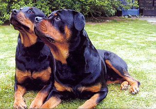

Rottweiler adulto(foto perfil)
Rottweiler adulto(foto perfil)Fabian sanchez
El Rottweiler es una raza canina de tipo molosoide originaria de Alemania, aunque fue también usado en la Antigua Roma. Era conocido como «perro carnicero de Rottweil» —en alemán porque estaba acostumbrado a proteger y pastorear ganado y tirar de los carritos de carnicería cargados de carne, junto con otros productos para el mercado. Es una de las razas más fuertes y poderosas del mundo debido a su gran potencia de mordida. Es un perro considerado potencialmente peligroso debido a sus características físicas.
Rottweiler adulto(foto perfil)
Pareja de Rottweiler
 rottweiler-corriendo
rottweiler-corriendo
La longitud del tronco según el estándar de la Federación Cinológica Internacional no debería superar a la altura en más de un 15%. Esta se mide desde el esternón hasta la protuberancia isquiática. La morfología de la cabeza es determinante en la evaluación de un ejemplar. Según el estándar alemán, la longitud del cráneo medida desde la punta del occipital hasta la esquina interior del ojo ha de ser de 8,5 a 13 cm en las hembras y de 9,5 a 15 cm en los machos. Además, la proporción entre el cráneo y el hocico ha de ser de 6 a 4 ó, dicho de otra manera, el 60% de la longitud total de la cabeza debe estar ocupada por el cráneo, dejando el 40% restante para el hocico.